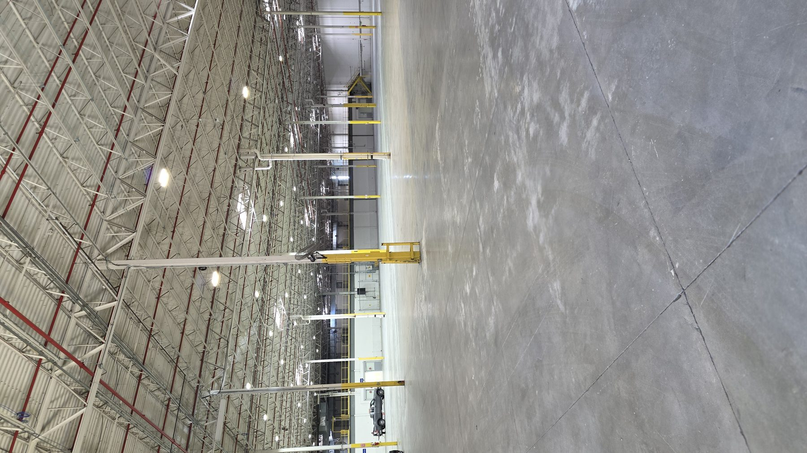
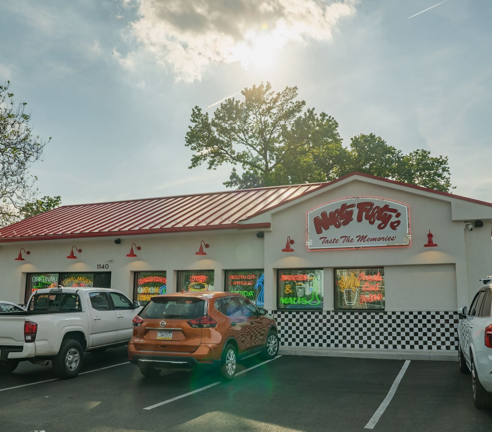
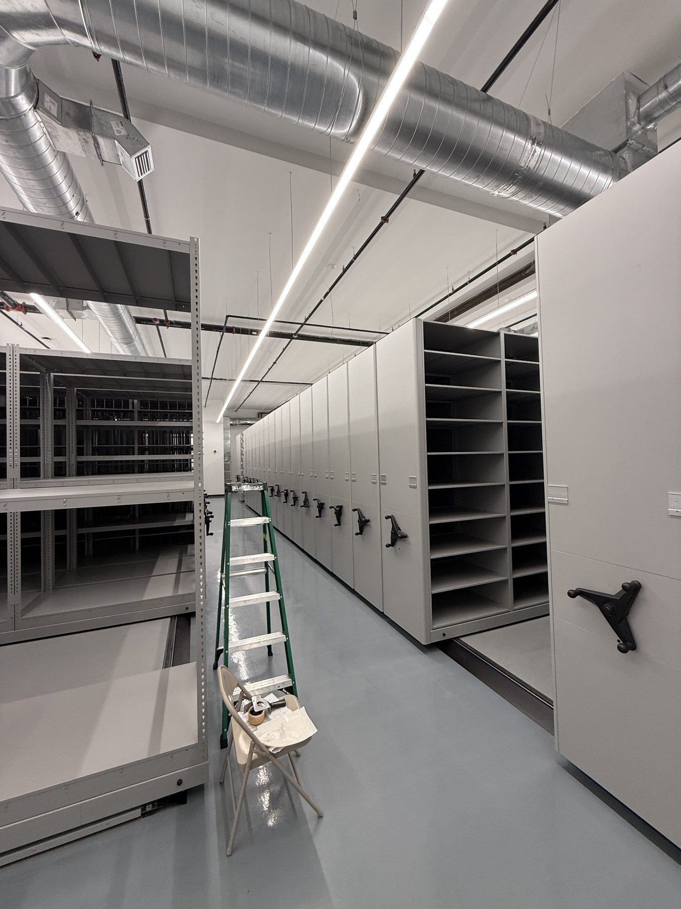

Project experience.
Selected GMT work across commercial, industrial, concrete, demolition, interior fit-out, hospitality, and multi-location environments.
Hands-on execution across demanding commercial environments.
From industrial fit-outs and concrete work to demolition and phased renovations, GMT stays close to field execution and project coordination.

Interior fit-out & field coordination
Active interior construction and phased fit-out work.

Industrial interior renovation
Demolition, renovation, and field coordination.

Concrete demolition & pour-back
Concrete, soil, slab preparation, and pour-back coordination.

Food facility construction
Core construction, panel systems, MEP integration, and finished facility work.

Restaurant construction
Demolition, build-back, and completed restaurant construction.

Commercial recreation fit-out
Completed pro shop, interior fit-out, circulation areas, and specialized batting facility coordination.

Industrial property improvements
Industrial property improvement work at 3 Pearl Court.
Built through performance. Earned through repeat business.
GMT has developed repeat relationships with general contractors, property owners, developers, and multi-location businesses across the Northeast and Mid-Atlantic.